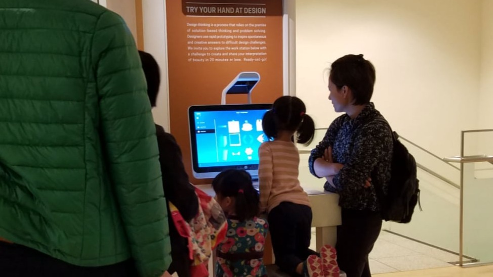
The HP Sprout was built for personal use — a creative workstation with a depth camera overhead and a touch mat below. But what happens when you take that experience public? When there's no onboarding, no manual, and the next user is a museum visitor who has 10 minutes and zero context?
That was the challenge. I led the UX for HP Sprout Walk-UP — a self-service mode that transformed Sprout's powerful hardware into an unattended, zero-training kiosk deployable in museums, libraries, schools, offices, and retail spaces.
The result was a fully modular, administrator-configurable platform that served radically different user types — from an eight-year-old in face paint to an elderly librarian scanning family documents.
Desktop software assumes familiarity. Public kiosks don't have that luxury. The Sprout Walk-UP needed to be simultaneously effortless for a first-time visitor and deeply configurable for the administrator — a librarian or museum director who needed to brand the experience, set time limits, choose apps, and keep sessions clean between users.
"We need something that can be used by pretty much anybody. We try to give our visitors activities that are suited for a multi-generational audience. The solution has to be fairly intuitive — spontaneous, easily recognizable, something you can just jump in and do."Jeff Burdona — Director of Education, San Jose Museum of Art
Field research and contextual inquiry across museums, libraries, and offices revealed a dramatically diverse user base with one shared constraint: zero patience for learning a new system.
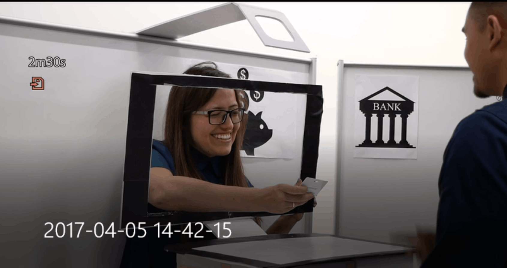
Experience prototyping with role-playing — simulating bank teller telepresence interactions to stress-test the interaction model before digital development.
Transforming a personal creative tool into a public kiosk required rethinking every assumption — session management, navigation hierarchy, error recovery, and trust signals.
Observed users in museums, libraries, and offices. Mapped journeys for first-time visitors across all key tasks — capturing, scanning, archiving, and sharing. Identified critical drop-off moments in the existing Sprout UX when used without support.
Built physical and digital prototypes for novel interaction models including telepresence and virtual assistant flows. Ran role-playing sessions with colleagues to simulate stranger-use scenarios and stress-test assumptions at low cost before engineering.
Designed two distinct UX layers: a locked-down, timed, touch-first visitor experience and a full-featured admin configurator. Each layer had its own information architecture, interaction model, and trust level — with no crossover confusion.
Each user journey was mapped against the constraint that the system was already set up and waiting. No login, no tutorial — just clear affordances and progressive disclosure.
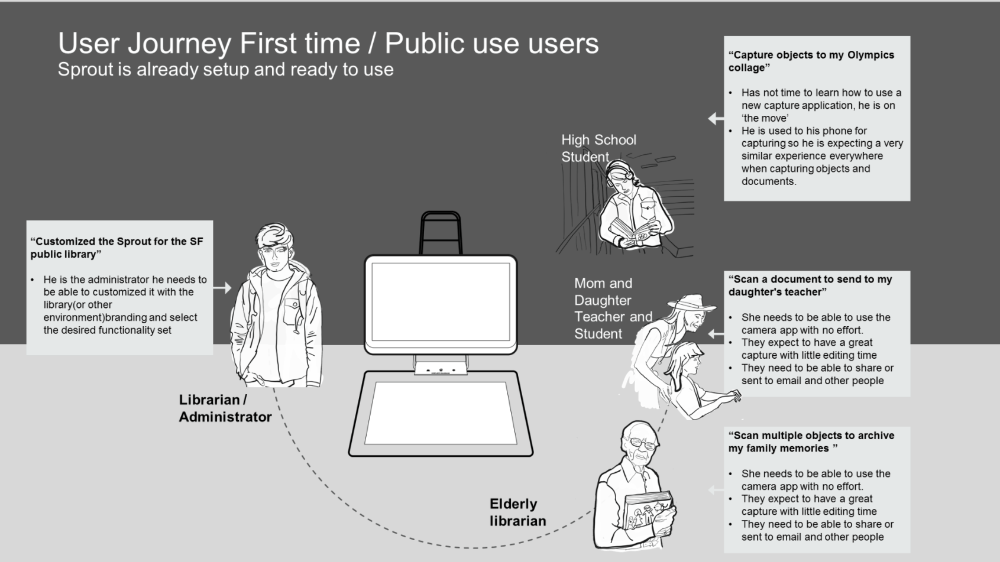
User Journey — First Time / Public Use. Designed around the constraint that Sprout is pre-configured and ready. Each persona's goal is achievable within minutes, without instruction.
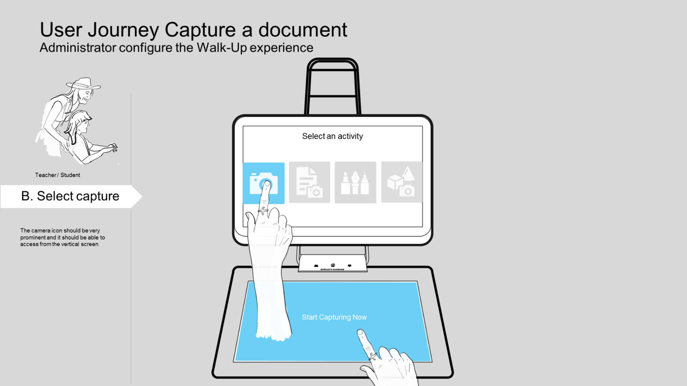
B. Select an activity — camera icon prominent on both vertical screen and touch mat
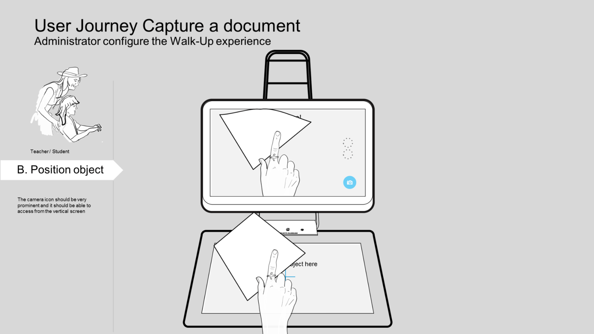
B. Position object — live preview on vertical screen guides placement
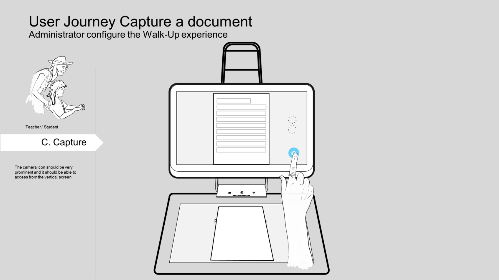
C. Capture — one tap, document captured. Session timer visible at all times
Walk-UP was designed as a complete ecosystem — not a skin on top of Sprout's existing software. It comprised a Configurator Tool for administrators, an optional Control Center for multi-device fleet management, and a locked-down visitor experience with timed sessions, curated apps, and multiple output paths.
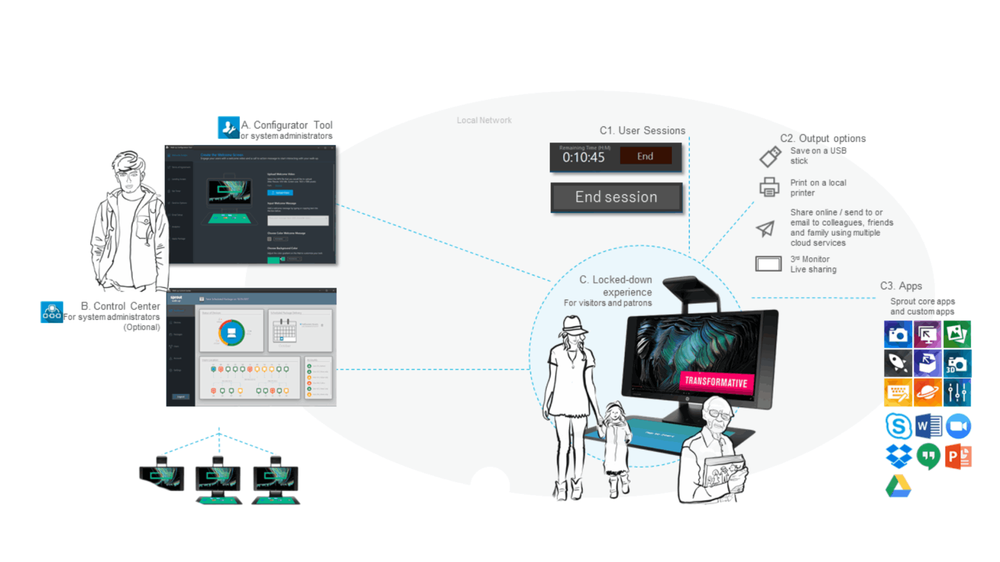
System architecture: Configurator Tool (A), optional Control Center for multi-unit management (B), and the locked-down public experience (C) with session management, output options, and curated app selection.
The core UX challenge was adaptability without chaos. A museum needed theatrical, immersive visuals. A library needed calm, utilitarian clarity. A bank branch needed trust signals and transactional precision.
The Walk-UP configurator allowed administrators to define their own brand identity — colors, logos, welcome videos, background imagery — while the underlying interaction model remained consistent and learnable across all deployments.
Session management was equally critical. The timed session model (configurable up to 20 minutes) protected privacy between users and reset the device to a clean state automatically. Outputs — USB, print, email, cloud share, or live display on a third monitor — were surfaced only at the right moment, not buried in menus.
The result: an experience that felt native to each space while sharing a single, maintainable codebase and UX framework.
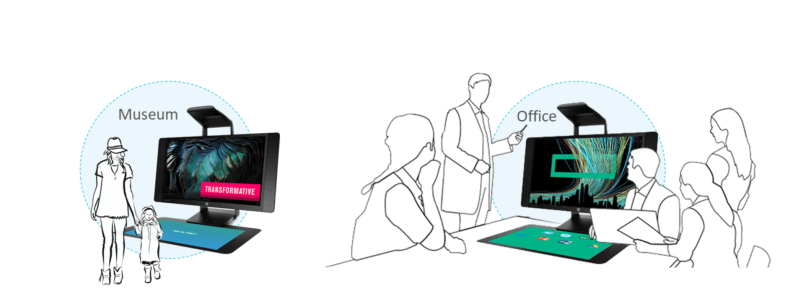
Museum and office deployment contexts — same hardware, radically different brand expressions. The configurator enabled this without engineering changes.
Walk-UP deployed across museums, libraries, and educational events. Seeing the system in use — children in costume exploring the touch mat, elderly visitors scanning heirlooms, families collaborating side by side — validated the core UX hypothesis: delight is achievable without instruction.
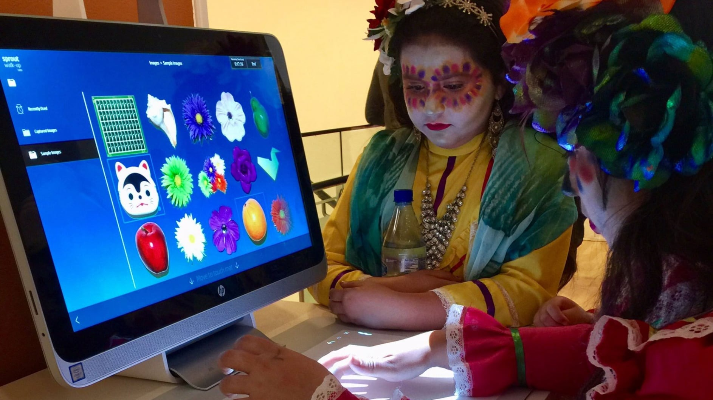
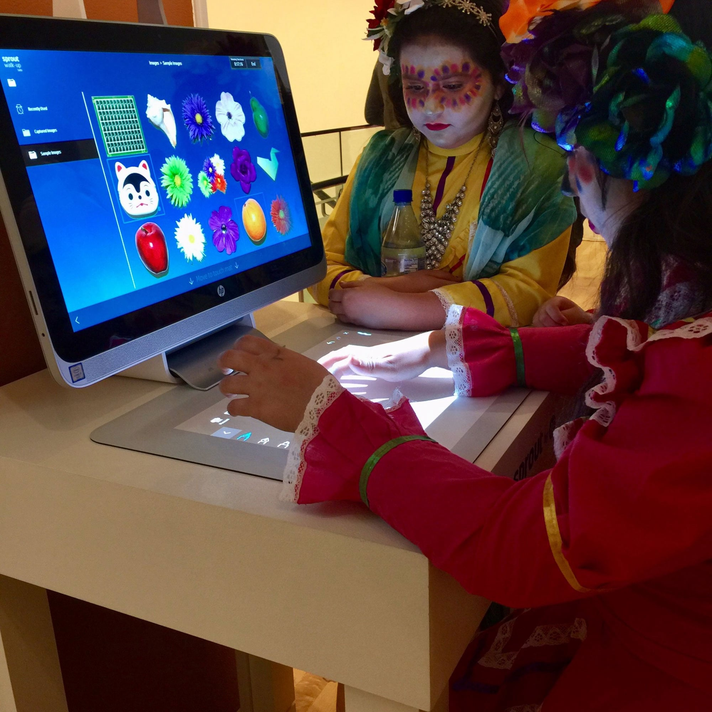
Walk-UP deployed at a cultural education event — children in traditional dress using the touch mat intuitively, with no instruction required.
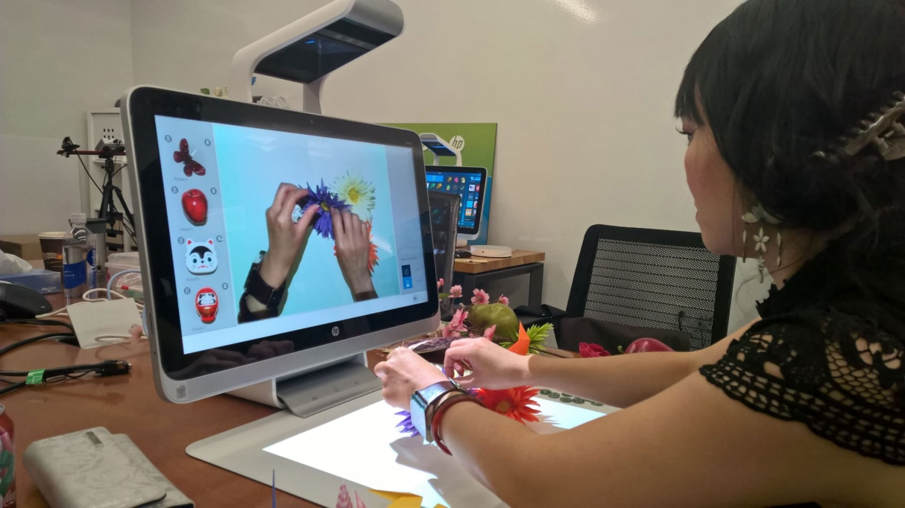
Lab testing — exploring the capture interaction with physical objects on the touch mat, validating the overhead camera's live preview UX before finalizing interaction flows.
First-time visitors across age groups completed core tasks — capture, scan, share — without any instruction or support staff intervention.
A single platform shipped across museums, libraries, offices, and retail environments — each with unique branding and app configurations.
The Configurator Tool and optional Control Center gave administrators full control over multi-unit fleets without engineering support.
Walk-UP taught me that the most demanding UX challenge isn't complexity — it's radical simplicity under real constraints. Every affordance had to work for an 8-year-old and an 80-year-old. Every session had to end cleanly with no trace of the previous user.
It deepened my conviction that great public UX is invisible. When a child touches the mat without hesitation, when a visitor scans a document and emails it home without asking for help — that's the design working. No applause, no recognition. Just flow.
The administrator experience was equally instructive: configurability is only powerful when it's bounded. Giving admins infinite options creates paralysis. Giving them a structured set of meaningful choices creates ownership.